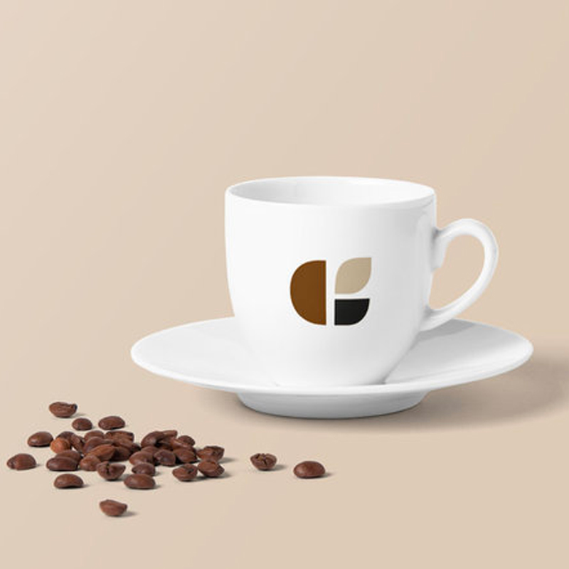
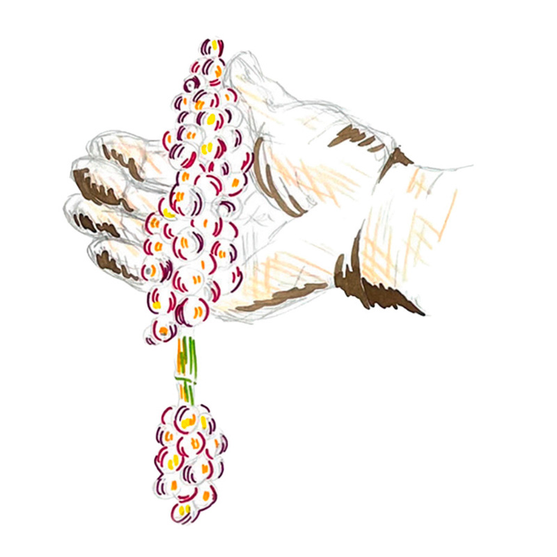
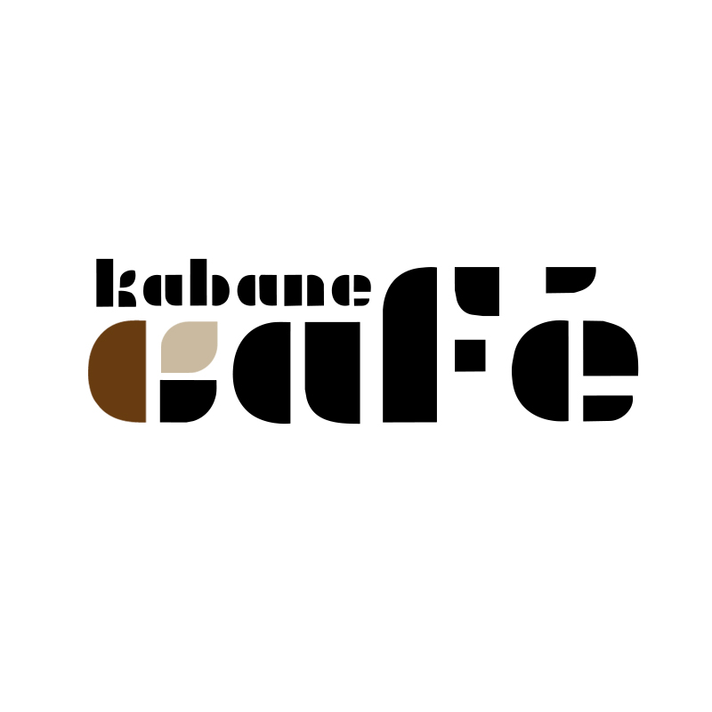
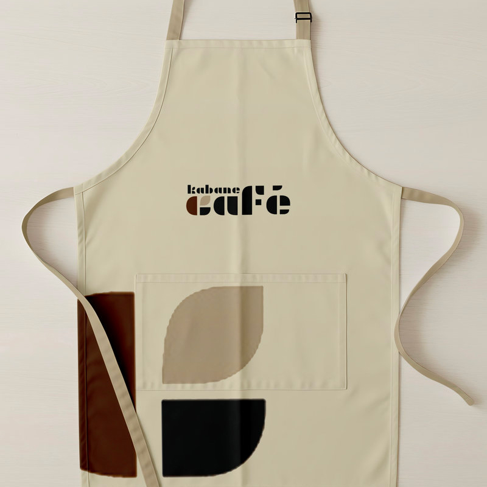

Kabane Café
Identité visuelle
2026
Rebranding du logo Kabane Café - projet d’identité visuelle.
Création d’un logo évoquant les cafés d’exception que propose de lieu : nombreuses recherches et expérimentations graphiques puis piste typographique choisie.
Résultat final : logotype jouant sur les formes des caractères afin de faire émerger des concepts liés au café - grain, tasse, fumée… Déclinable sur différents supports et possibilité d’utiliser une version plus compacte pour plus de flexibilité.



